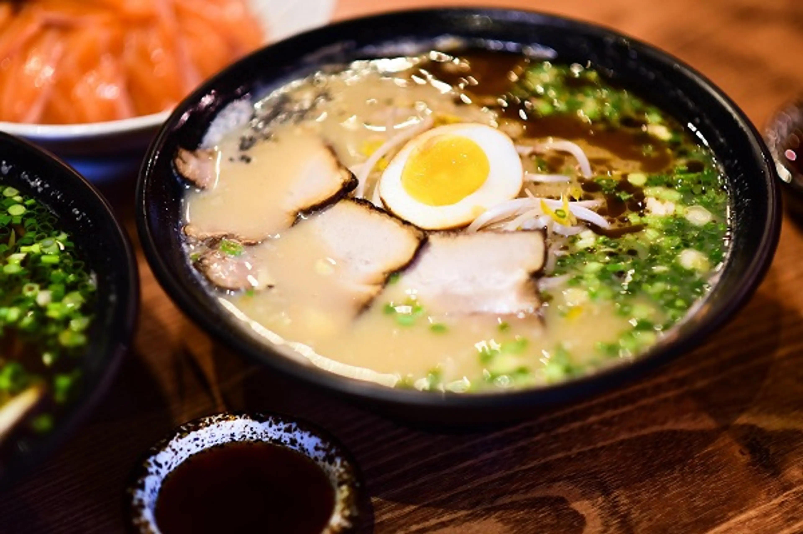

Tonkotsu Ramen
「豚骨ラーメン — The creamy essence of pork at its fullest expression.'
Tonkotsu Ramen was born in Hakata (Fukuoka). Its thick broth is made by boiling pork bones for hours to release their natural collagen, creating a velvety texture and a deep, full-bodied flavor.
Ingredients
- Pork bone broth cooked for over 12 hours
- Thin, firm noodles
- Chashu pork, garlic, scallion and pickled ginger
Flavor
Intense and creamy, with great umami depth.
Aroma
Rich, warm and slightly smoky.
Texture
Thick, smooth and comforting.